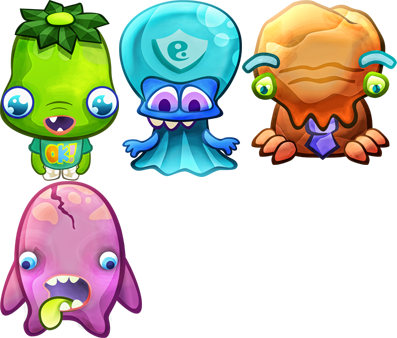

Creating Sprite Sheets
We were somewhat dismayed that Pixi.js uses a proprietary commercial app to build sprite sheets.
We rely solely on open source tools, so we built an open source filter for our node.js build tool---Projmate.
The pm-spritesheet filter generates sprite sheets and a JSON meta file compatible with Texture Packer (as used by pixi.js).
In this tutorial four images


are combined into a single sprite sheet. These images are from pixi.js' Example 2.

Installing Projmate
Projmate is command-line build tool we use internally for almost half a year now that works well in Linux, Mac and Windows. In order to use it, first install these pre-requisites
Install Projmate globally
npm install -g projmate-cli@0.1.0-devInside a project install the sprite sheet filter
npm install pm-spritesheetGenerate Sprite Sheet Task
Projmate, like most build tools, breaks down a project into smaller units of work called tasks that can
depend on each other. What is different about Projmate is that a task is defined by one or more pipelines which
define behaviour for development, test and production mode. For example, in production mode a task can
minify, compress, add a banner, optimize, etc.
In this example, we want to generate a sprite sheet from all the tp/*.png files pixi.js' second example
folder
▾ tp/
eggHead.png
flowerTop.png
helmlok.png
skully.pngFirst create a build file Projfile.js at the root of your
project. The pipeline for spritesheet task requires only
the spritesheet filter which is passed all files matching files.
spritesheet filter then retrieves dimensions for each image and
determines an eficient layout then generates the image and meta file.
exports.project = function(pm) {
var f = pm.filters(require('pm-spritesheet'));
return {
spritesheet: {
files: 'tp/*.png',
dev: [
f.spritesheet({filename: 'SpriteSheet.png', root: 'tp/', jsonStyle:'texturePacker'})
]
}
};
};To run the spritesheet task from the terminal
pm run spritesheetThe generated sprite sheet and JSON meta file is supported by pixi.js. We'll cover this in a future example.
The only caveat is Projmate is not well documented as a small team can only do so much. Look at this
project's Projfile.coffee which has the spritesheet task for this tutorial.